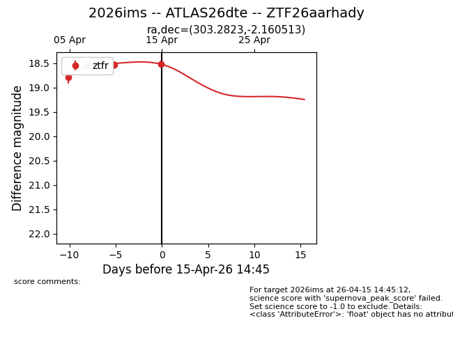
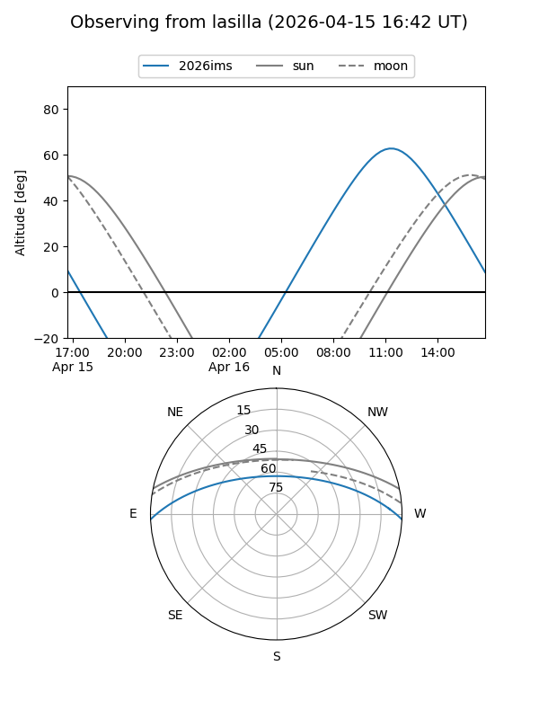
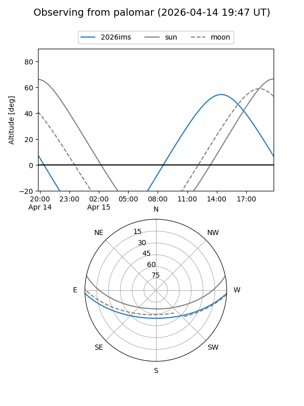
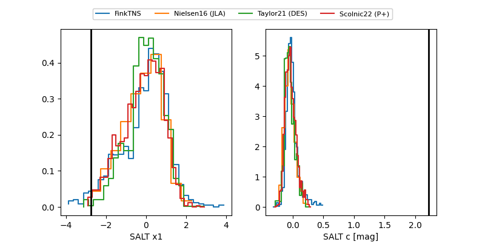

2026ims
Target 2026ims at 2026-04-15 14:55
Aliases and brokers:
FINK: link
Lasair: link
ALeRCE: link
TNS: link
YSE: link
alt names
ZTF26aarhady (ztf,fink_ztf)
2026ims (tns,yse)
ATLAS26dte (atlas)
Coordinates:
equatorial (ra, dec) = 303.2823,-2.16051
equatorial (HMS+DMS) = 20:13:07.75,-02:09:37.85
galactic (l, b) = (40.5617,-19.11873)
Flags:
Photometry:
last ztfr=18.51
5 ztfr detections
Lightcurve

Visibility


Additional plots
